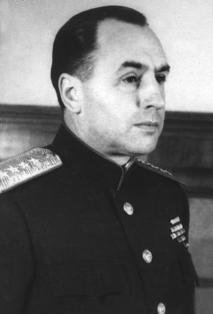

Антонов А.И.
Антонов Алексей Иннокентьевич
Советский военачальник, генерал армии, член Ставки Верховного Главнокомандования, начальник Генерального штаба в 1945—1946 гг.
15.09.1896 – 18.06.1962
Родился в городе Гродно (Белоруссия). Отец — выходец из Сибири, офицер-артиллерист, мать Тереза Ксаверьевна — полька, дочь сосланного в Сибирь за участие в восстании 1863—1864 гг. В 1916 г. Алексей Антонов призван в действующую армию. В декабре того же года окончил ускоренный курс обучения в Павловском военном училище, и в звании прапорщика направлен в лейб-гвардии егерский полк. Был ранен.
С началом корниловского мятежа на столичных предприятиях началось формирование отрядов Красной гвардии. Антонов занимался организационными вопросами формирования сводных частей и их обеспечением. С началом Гражданской войны и иностранной интервенции Алексей Антонов переходит на действительную службу в Красную Армию (11 апреля 1919 г.). Сначала воевал на Южном фронте РККА под Луганском, в должности помощника штаба дивизии. Затем Антонов в составе 15-ой Инзенской дивизии принимал участие в Ростовско-Новочеркасской операции, взятии Новороссийска, после чего был назначен начальником штаба 45-й бригады. Вел военные действия против войск Врангеля в Херсонской области, в ноябре 1920 г. бригада Антонова переброшена к озеру Сиваш для участия в Перекопско-Чонгарской операции. 15 ноября был занят Севастополь, 16 ноября — Керчь. За действия 45-й бригады в Крыму в 1923 г. Антонов был награждён Почётным оружием Реввоенсовета и Почётной грамотой. В 1928–1933 гг. учится на командном и оперативном факультетах Военной Академии им. Фрунзе. Осенью 1935 г. Антонов назначен начальником оперативного отдела штаба Харьковского военного округа. В октябре 1936 г. отправлен на обучение в Академию Генерального Штаба Красной Армии. В июне 1937 г. Ворошилов назначил Антонова на должность начальника штаба Московского военного округа. С декабря 1938 г. Антонов перешёл на преподавательскую и научно-исследовательскую работу в Академию имени Фрунзе. Среди основных тем, над которыми работал Антонов, были тактика немецкой армии в наступлении и эволюция тактического применения танковых войск на опыте войны в Испании. 4 июня 1940 г. Антонову присвоено воинское звание «генерал-майор». В марте 1941 г. его направляют в Киевский военный округ на должность заместителя начальника штаба округа. Фактически занимался подготовкой войск округа к обороне от немецкого удара. 24 июня 1941 г. Антонова назначают начальником Штаба Киевского особого военного округа. На этом посту он занимается мобилизацией и вопросами эвакуации из прифронтовой полосы. В августе 1941 г. возглавил работу по формированию управления Южного фронта, а 27 августа возглавил его штаб. В октябре 1941 года штаб фронта начал подготовку Ростовской оборонительной операции. В ночь на 28 ноября 1941 г. Ростов-на-Дону был освобождён. 27 декабря 1941 г. Антонову присвоено звание «генерал-лейтенант». С началом битвы за Кавказ Северо-Кавказский и Южный фронты были объединены в единый Северо-Кавказский под командованием Маршала Будённого. Начальником штаба фронта был назначен Антонов (июль 1942 г.). В декабре 1942 г. Антонов становится начальником Оперативного управления Генерального штаба. Антонов принимал участие в разработке всех важных кампаний и стратегических операций Вооружённых Сил. С 1944 г. одним из ключевых направлений деятельности Алексея Антонова стали взаимоотношения с союзниками. 4 февраля 1945 г. – назначен начальником Генерального штаба. В феврале 1945 г. Антонов выступал с докладом на Ялтинской конференции, был участником Потсдамской конференции. Скончался 18 июня 1962 г. в Москве. Урна с прахом замурована в Кремлёвской стене на Красной площади.
| Антипов Н.К.< Предыдущая | Следующая >Бадаев А.Е. |
|---|